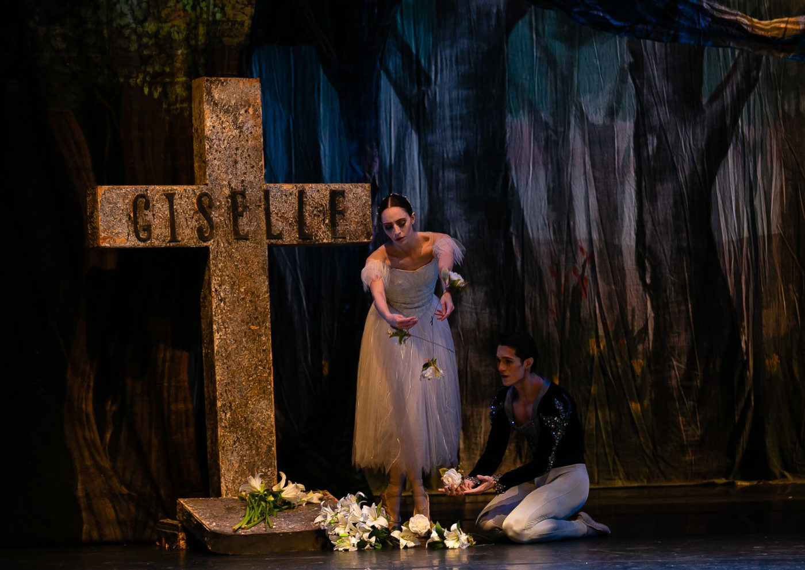

Giselle, um dos espetáculos de ballet clássico mais famosos do mundo, chega ao Teatro Sérgio Cardoso

Com direção de Adriana Assaf, a Cia. Paulista de Dança apresenta o espetáculo Giselle, o ballet clássico de repertório narra emocionante história de amor, traição, perdão e redenção.
Considerado um dos balés clássicos de repertório mais famosos do mundo o espetáculo foi Encenado originalmente em 1840 pela Ópera Nacional de Paris, com coreografia de Jules Perrot e Jean Coralli, o balé romântico foi composto em dois atos por Adolphe Adam sobre um libreto de Jules-Henri Vernoy de Saint-Georges e Théophile Gautier. Trata-se de uma história de amor, traição, perdão e redenção.
O espetáculo da Cia. Paulista de Dança é estrelado pelos primeiros-bailarinos Larissa Luna (Giselle), Livia Cassante (Mirtha), Paulo Vitor Rodrigues (Albretch) e Marcos Silva (Hilarion).
A história se passa em uma pequena vila na Europa, onde Giselle, uma camponesa apaixonada pela dança, vive com sua mãe viúva. A jovem apaixona-se por Albrecht, que finge ser camponês para conquistar seu coração. Eles planejam se casar, no entanto, Giselle descobre que o amado é, na verdade, um nobre prometido em casamento a outra mulher, chamada Bathilde. Devastada com a traição, a protagonista enlouquece e morre de tristeza e decepção.
Escrita em pleno século XIX, a emocionante história de Giselle combina o amor romântico, a tragédia, o sobrenatural e a redenção. A obra-prima do romantismo foi um sucesso imediato em 1840 e, desde então, tem sido montada por companhias de todo mundo em forma de ópera, musical e até filmes.
“Giselle” fica em cartaz até o dia 26 de novembro, sextas-feiras, às 20h30; aos sábados, às 16h e às 20h30; e aos domingos, às 16h no Teatro Sérgio Cardoso. Os ingressos estão disponíveis via Sympla, ou diretamente na bilheteria do local.